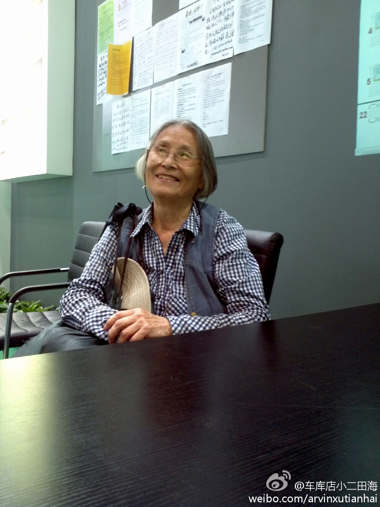

最近乐于转辟谣帖子，实在不希望造谣者把微博搞得乌烟瘴气。//@青梅:…………//@胜天: 很多人将段子越听越真了，感慨自己运气不佳，呵呵。@正和岛刘东华:最近有一条关于均瑶集团创始人、我英年早逝的好朋友王均瑶的一条传言，说他的夫人携19亿巨资嫁给了他的司机，且消息越传越广，令我很是诧异。因为我知道均瑶的司机现在给弟弟均豪开车，今天正好见到均豪就问他实情，均豪说简直荒唐，完全是子虚乌有。为了澄清谣言，请朋友们相互转发，以敬逝者。
佩服。可是如果这位老人去参加某些公司举办的活动，很可能被当成“会虫”的。//@网路冷眼:真的诠释了活到老，学到老的精神 //@ruilog://@车库咖啡: 昨天在座的科技部官员都为之汗颜，尊敬这位老人。@田海姓徐:昨天有位八十二岁高龄的老奶奶来到车库的展位，还以为她是想找个座位休息，后来才知道是奔着车库来的，原来是她孙女现在在美国创业，她想过来了解一下@车库咖啡 。经常单车出行，喜欢参加新技术类展览，五十多岁的时候拿到某著名高校的硕士学位，会讲六种语言……最近在研究魔方，一种非常强的学习精神 
基本的公共服务，而且还是稀缺状态，付钱就能优先？就是不行！//@段永朝://@薛兆丰: 暴雨里多付钱给出租车？不行！拥挤中多付钱买个座位？不行！疾病中多付钱看个专家？不行！“除非解放全人类，否则谁也别想先改善” 的思维模式深入人心。若按民意治国，社会主义是必然。---:抱歉，由于作者设置，你暂时没有这条微博的查看权限哦。查看帮助： 网页链接
姐姐在建筑设计院，说同济大学某校长断言：“这么多年，我们的专业中土木，结构，水，电，暖，都有很大进步，唯独建筑设计本身没有进步，因为建筑设计在中国是由长官审美决定的”。难怪有那么多丑得不行的建筑，比如北京的中华世纪坛，每次看到，都觉蛋疼。